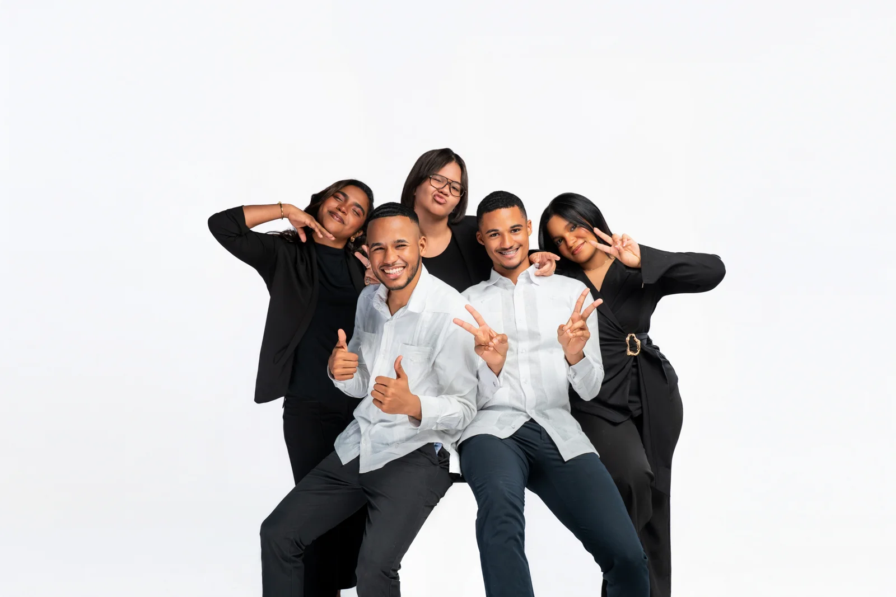

BIENVENIDOS DELEGADOS_
BID
REGIONAL 12
[ VOCES JOVENES, SOLUCIONES GLOBALES ]
MR 2026 · REPÚBLICA DOMINICANA
Desarrollado por José Anibal Santana Herrera & Bielka C. A. Castillo
BIENVENIDOS DELEGADOS_
▲ Toca para acceder ▲
Una propuesta que transforma, conecta e inspira a cada joven de la Regional 12 hacia un futuro de excelencia y liderazgo.


Si todo lo que viste hasta aquí te emocionó, esto es lo que lo sostiene. El BID es el documento que convierte la visión en estructura — cada comité, cada agenda, cada detalle pensado para que esta Regional no solo se viva, sino que deje huellas en quienes lo protagonicen.
Conoce oficialmente a las tres personas que guiarán el timón de este Modelo Regional 2026 de la Regional 12. Visión estratégica, excelencia académica y ejecución logística — todo en un solo equipo. Toca sobre una de ellas para ver su perfil completo.


Nuestra propuesta académica se estructura en cuatro ejes estratégicos, representados por gemas. Cada gema agrupa comisiones diseñadas para que los delegados asuman roles de liderazgo y debatan soluciones a problemáticas globales reales.
Simboliza la sabiduría, verdad y legalidad. Enfocado en la resolución pacífica de controversias y el respeto por el derecho internacional.
Simboliza excelencia, resiliencia y visión. Aborda la protección de ideas, la cooperación económica y la tecnología del futuro.
Asociada con el equilibrio, la renovación y el desarrollo sostenible. Orientada al progreso social, la equidad y los derechos socioeconómicos.
Simboliza la intensidad, fortaleza y determinación. Enfocado en salvaguardar el orden, mantener la paz y proteger los derechos fundamentales.
Las personas comprometidas que lideran los comités de redacción, gestión académica, capacitaciones, bienestar, eventos y logística integral.
Imágenes que capturan la esencia del liderazgo, la excelencia académica y el compromiso de nuestros jóvenes delegados.


Cada pilar representa un compromiso concreto con el desarrollo integral de los jóvenes de la Regional 12.
Espacios de formación rigurosa, talleres especializados y metodologías innovadoras que elevan el nivel académico de cada delegado.
AcademiaConectamos a los jóvenes dominicanos con perspectivas internacionales, fomentando el pensamiento crítico y la solución de problemas mundiales.
GlobalizaciónIntegramos herramientas tecnológicas y pensamiento disruptivo para preparar a los líderes del mañana desde hoy.
InnovaciónFormamos líderes íntegros con valores sólidos, habilidades de comunicación y capacidad de transformar sus comunidades.
LiderazgoCelebramos y preservamos la riqueza cultural dominicana mientras construimos puentes hacia el mundo con orgullo de nuestras raíces.
CulturaUna Secretaría General Académica accesible, organizada y comprometida con la excelencia en cada proceso del BID.
GestiónBajo el lema «Voces Jóvenes, Soluciones Globales», nuestra misión es formar jóvenes líderes mediante el desarrollo del pensamiento lógico, crítico y creativo, fortaleciendo sus habilidades de liderazgo, argumentación y diplomacia. Promovemos el entendimiento intercultural y la participación activa de la juventud como agentes de cambio capaces de generar soluciones innovadoras a los desafíos locales y globales.
Construir un Modelo Regional de excelencia que inspire, forme y empodere a jóvenes líderes, convirtiéndose en un espacio de referencia para el desarrollo del pensamiento crítico, la diplomacia y la cooperación, donde las voces jóvenes se transformen en soluciones globales capaces de generar un impacto positivo en la sociedad.
Salvaleón de Higüey, municipio cabecera de la provincia La Altagracia y sede de la Regional 12 del Ministerio de Educación, es una ciudad donde convergen historia, cultura y fe. Esta capital espiritual es el escenario ideal para el diálogo, la cooperación y la construcción de soluciones por parte de jóvenes líderes.

UASD Recinto Higüey: Extiende en la región Este el legado de la Primada de América. Un espacio donde convergen conocimiento, juventud y vocación de servicio, ideal para celebrar la Edición 2026.
Celebrar el Modelo Regional en este recinto representa la unión entre historia y futuro: un encuentro donde la palabra se convierte en puente y la educación en motor de cambio.
Únete al movimiento que está transformando la educación, el liderazgo y la visión de los jóvenes dominicanos. El BID MR 12 empieza contigo.
Cuando la juventud decide involucrarse, cuestionar y construir, las transformaciones dejan de parecer lejanas. Este año, más de 200 jóvenes provenientes de distintos centros educativos de la Regional 12 se reúnen impulsados por una misma convicción: la de pensar un mundo distinto y asumir un rol activo dentro de él.
Hoy les damos la bienvenida a un espacio que, durante años, se ha convertido en punto de encuentro para estudiantes que entienden que el liderazgo nace de la iniciativa, de la preparación y de la voluntad de generar impacto. Un modelo que ha visto crecer generaciones de jóvenes capaces de convertir ideas en propuestas y perspectivas en acciones con propósito.
La Regional 12 de Educación reafirma, una vez más, su compromiso con la formación de ciudadanos críticos, conscientes y comprometidos con su entorno. Porque creemos firmemente que el futuro se construye desde las aulas, las conversaciones y las iniciativas impulsadas por jóvenes como ustedes.
El MR2026 de la R12 llega acompañado de expectativas, desafíos y nuevas oportunidades, pero sobre todo llega con certeza. La certeza de que cada participante posee una voz valiosa, una visión distinta y el potencial de aportar soluciones necesarias para los retos que enfrenta nuestra sociedad. Este es el espacio para desarrollar ideas, fortalecer habilidades y descubrir el alcance que puede tener una generación cuando se le brinda la oportunidad de participar.
Queremos invitarlos a vivir este proceso con intención y compromiso. Que aprovechen cada sesión, cada intercambio y cada experiencia como una oportunidad para crecer, aprender y dejar huella. Porque las voces jóvenes no solo merecen ser escuchadas: merecen formar parte de las decisiones y soluciones que darán forma al mundo que estamos construyendo.
Bienvenidos a su modelo.